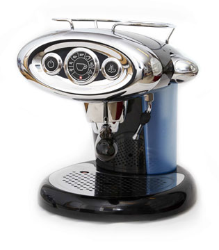

Julegavetips fra kaffekongen
X7 Illy Francis Francis er en flott kaffetrakter.
Den har scoret høyt i mange av årets tester
og lager god kaffe!
5 ting du ikke visste om kaffe
- Cafe au lait er fransk og betyr kaffe med melk"
- Caffè americano er en espresso tilsatt kokende vann
- Caffè latte er som en cappuccino, men med mer melk og mindre skum
- Caffe mocca er som en latte, men med sjokoladesaus
- Espresso er en ren kaffe
Ukas Kaffe:
Irish coffee

Se kaffedrikker for oppskrift.